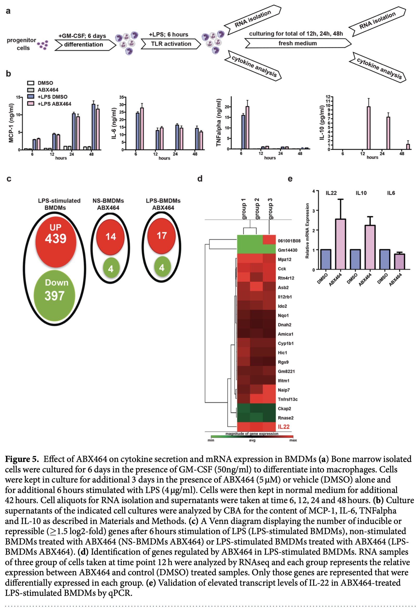

Home
Ulcerative Colitis
The primary endpoint for ulcerative colitis is measured by
qualitative symptoms of stool frequency, rectal bleeding, mucosal
appearance, and a physician’s rating. (“Ulcerative Colitis:
Clinical Trial Endpoints Guidance for
Industry” 2016).
Obefazimod
Obefazimod started off as an HIV drug and now is an Ulcerative
Colitis (UC) drug (Campos et
al. 2015) (Tazi et al. 2010).
Then in 2017, it was discovered to have anti-inflammatory properties.
(Chebli et al.
2017) They used dextran sulfate sodium to cause colitis in
mice, and then administered their drug ABX464. They measured efficicacy
by tracking IL-6, TNFα and MCP-1.
 The paper starts by measuring
the effectiveness of ABX464 for treating DSS-induced colitis. There 2
variables that they must manage, the ABX464 efficacy, and the efficacy
of the DSS. As a result they have 4 total groups consisting of: {(no
disease, no drug), (no diesease, drug), (disease, no drug),
(disease,drug)}. Figure A describes the administration protocol. They
give the drug for 8 days and then wait 3 days before analyzing the
results. Figure B measures the relative weight of the mice. We can
observe that when DSS is given, the weight begins to decline for the
both the metylcellulose control and the ABX464.
The paper starts by measuring
the effectiveness of ABX464 for treating DSS-induced colitis. There 2
variables that they must manage, the ABX464 efficacy, and the efficacy
of the DSS. As a result they have 4 total groups consisting of: {(no
disease, no drug), (no diesease, drug), (disease, no drug),
(disease,drug)}. Figure A describes the administration protocol. They
give the drug for 8 days and then wait 3 days before analyzing the
results. Figure B measures the relative weight of the mice. We can
observe that when DSS is given, the weight begins to decline for the
both the metylcellulose control and the ABX464.
 Then in another study, they
administered the DSS for a total of 60 days. and ran 3 groups: ABX64,
ABX64 then control, and just control. Figure 2b shows that mice with
only MC quickly declined in health.
Then in another study, they
administered the DSS for a total of 60 days. and ran 3 groups: ABX64,
ABX64 then control, and just control. Figure 2b shows that mice with
only MC quickly declined in health.
 Figure 3b shows a control image
of the colon and the difference of ABX464 vs the DSS + MC. We see less
lesions in 3b. 3cdef shows inflammatory markers for both the MC control
and the ABX464 drug.
Figure 3b shows a control image
of the colon and the difference of ABX464 vs the DSS + MC. We see less
lesions in 3b. 3cdef shows inflammatory markers for both the MC control
and the ABX464 drug.
 4a shows that ABVX works
completely identical to control when no DSS is shown. 4b shows the gene
expression patterns when DSS is present with the control treatement,
showing a wide varianc in the difference of expression during. 4c shows
some reversion back to 4a, which is the gene expression when treated
with ABVX. The arrow indicates the expression of IL-22, which seems to
dampen the intestinal inflammation when it’s expressed.
4a shows that ABVX works
completely identical to control when no DSS is shown. 4b shows the gene
expression patterns when DSS is present with the control treatement,
showing a wide varianc in the difference of expression during. 4c shows
some reversion back to 4a, which is the gene expression when treated
with ABVX. The arrow indicates the expression of IL-22, which seems to
dampen the intestinal inflammation when it’s expressed.
 There are two distinct
variables in this experimental run: the LPS and the drug. So there are 4
groups, (LPS, control) x (ABX464, DMSO (control)).This measures the
transcription levels of four inflammation markers: (1) MCP-1, (2) IL-6,
(3) TNF-α, (4) IL-10. For MCP-1, we see that the LPS + DMSO steadily
rise for both, with the ABX464 lower after 48 hours. For IL-6, We see
Similar levels for both. For TNF alpha, we see high levels after 6 hours
for both, and negligible for the rest. For IL-10, we see LPS ABX 464
declining after 12 hours.
References
Campos, Noëlie, Renier Myburgh, Aude Garcel, Audrey Vautrin, Laure
Lapasset, Erika Schläpfer Nadal, Florence Mahuteau-Betzer, et al. 2015.
“Long Lasting Control of Viral Rebound with a New Drug
ABX464 Targeting Rev – Mediated Viral
RNA Biogenesis.” Retrovirology 12 (1): 30.
https://github.com/akshaygulabrao/ABVX/blob/main/abx464_mediated_viral_RNA_biogenesis.pdf.
Chebli, Karim, Laura Papon, Conception Paul, Aude Garcel, Noëlie Campos,
Didier Scherrer, Hartmut J. Ehrlich, Michael Hahne, and Jamal Tazi.
2017.
“The Anti-HIV Candidate Abx464 Dampens Intestinal
Inflammation by Triggering Il-22 Production in Activated
Macrophages.” Scientific Reports 7: 4860.
https://github.com/akshaygulabrao/ABVX/blob/main/abx464_dampens_intestinal_inflammation.pdf.
Tazi, Jamal, Nadia Bakkour, Virginie Marchand, Lilia Ayadi, Amina
Aboufirassi, and Christiane Branlant. 2010.
“Alternative Splicing:
Regulation of HIV-1 Multiplication as a Target for Therapeutic
Action.” https://github.com/akshaygulabrao/ABVX/blob/main/target_HIV1_replication.pdf.